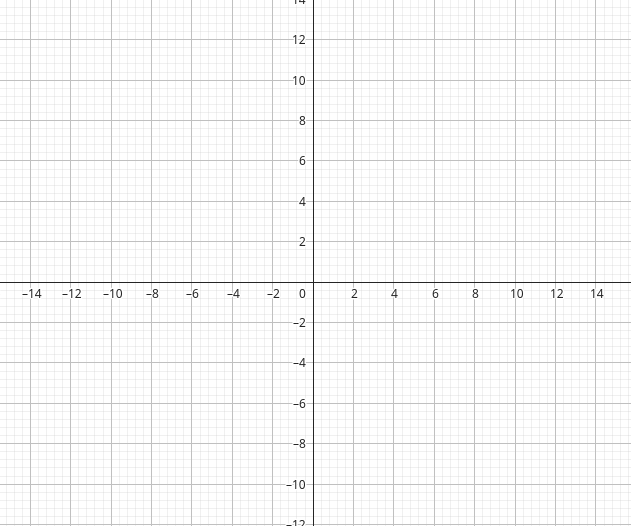
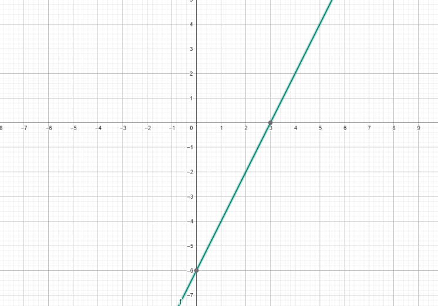

Em um jogo de videogame, a pontuação de um jogador decorre da quantidade de missões cumpridas, conforme os dados na tabela a seguir:
Missão cumprida (x)
Pontuação (y)
2
5
4
9
6
13
descreva os pontos no plano cartesiano

Descreva os pontos no gráfico
Sendo x o número de missões cumpridas e y a pontuação, qual a relação representa relação entre essas variáveis?
Um vendedor de uma loja ganha um salário fixo de R$ 2.000,00 mais uma comissão de 15% sobre o valor total vendido por ele. Sendo y o salário total do vendedor
e x o valor que ele arrecadou para a loja com suas vendas, complete a tabela:
valor de venda (x)
Salário (y)
1000
2000
3500
5000
Coloque no gráfico os pontos (Valor de vendas, Salários)?
A função que melhor representa a situação descrita é?
Uma empresa de telefonia oferece dois tipos de planos:
Plano Plus: 3,5 GB de internet, mais ligações ilimitadas para telefones fixos e celulares.
Plano Econômico: 3,5 GB de internet, mais 50 min de ligações para telefones fixos e celulares.
O plano Plus custa por mês R$ 65,90, já o plano Econômico custa R$ 10,80, sendo que é cobrado R$ 1,90 por minuto quando o cliente exceder os 50 min incluídos no plano.
Considerando esses dois planos, usando quantos minutos de ligações por mês, o plano Plus passa a ser mais econômico?
Qual afunção que descreve o plano plus?
Qual a função que descreve o plano econômico?
Uma caixa d’água de um pequeno condomínio tem capacidade inicial de 12 000 litros. Para manutenção, instala-se uma torneira de descarga que fica aberta
durante a limpeza, fazendo o reservatório perder 150 litros por hora de forma constante (vazão uniforme).
Qual será o volume após
8 horas?
15 horas?
Defina os pontos?
Qual a função que descreve o problemas?
Além disso, a partir da 20ª hora abre-se
um dreno auxiliar que aumenta a perda total para 250 litros por hora
Qual será o volume após
30 horas?
Com quantas horas vai esvaziar completamente a caixa?
Qual a nova função que descreve o problemas?
49) (Provacaed2025)Observe abaixo a função de primeiro grauf tal que \(f:\mathbb{R} \longrightarrow \mathbb{R}\)

A lei de formação desta função é:
A) f(x) = -6x + 3
B) f(x) = -2x - 6
C) f(x) = x - 6
D) f(x) = 2x - 6
E) f(x) = 2x + 6
Coeficientes, toda função do primeiro grau e do tipo \(f(x) = ax + b\) sendo \(a\) coeficiente angular e \(b\) coeficiente linear